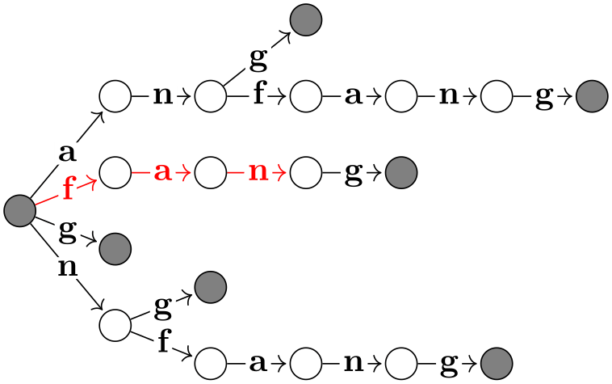
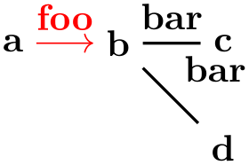
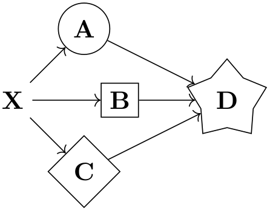
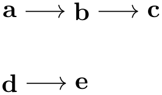
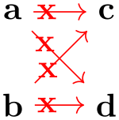
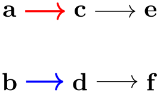
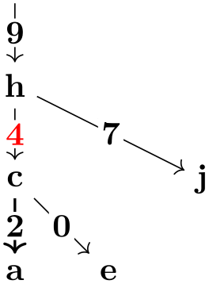

The TikZ and PGF Packages
Manual for version 3.1.10
TikZ
19 Specifying Graphs¶
19.1 Overview¶
TikZ offers a powerful path command for specifying how the nodes in a graph are connected by edges and arcs: The graph path command, which becomes available when you load the graphs library.
-
TikZ Library graphs ¶
\usetikzlibrary{graphs} %
LaTeX
and plain
TeX
\usetikzlibrary[graphs] %
ConTeXt
The package must be loaded to use the
graph path command.
In this section, by graph we refer to a set of nodes together with some edges (sometimes also called arcs, in case they are directed) such as the following:
\usetikzlibrary {graphs}
\tikz [>={To[sep]}, rotate=90, xscale=-1,
mark/.style={fill=black!50}, mark/.default=]
\graph [trie, simple,
nodes={circle,draw},
edges={nodes={
inner
sep=1pt, anchor=mid,
fill=graphicbackground}}, % yellowish background
put node text on incoming edges]
{
root[mark] ->
{
a
->
n
->
{
g
[mark],
f
->
a
->
n
->
g [mark]
},
f
->
a
->
n
->
g [mark],
g[mark],
n
->
{
g[mark],
f
->
a
->
n
->
g[mark]
}
},
{ [edges=red] % highlight one path
root
->
f
->
a
->
n
}
};
The nodes of a graph are normal TikZ nodes, the edges are normal lines drawn between nodes. There is nothing in the graphs library that you cannot do using the normal \node and the edge commands. Rather, its purpose is to offer a concise and powerful way of specifying which nodes are present and how they are connected. The graphs library only offers simple methods for specifying where the nodes should be shown, its main strength is in specifying which nodes and edges are present in principle. The problem of finding “good positions on the canvas” for the nodes of a graph is left to graph drawing algorithms, which are covered in Part IV of this manual and which are not part of the graphs library; indeed, these algorithms can be used also with graphs specified using node and edge commands. As an example, consider the above drawing of a trie, which is drawn without using the graph drawing libraries. Its layout can be somewhat improved by loading the layered graph drawing library, saying \tikz[layered layout,..., and then using LuaTeX, resulting in the following drawing of the same graph:

The graphs library uses a syntax that is quite different from the normal TikZ syntax for specifying nodes. The reason for this is that for many medium-sized graphs it can become quite cumbersome to specify all the nodes using \node repeatedly and then using a great number of edge command; possibly with complicated \foreach statements. Instead, the syntax of the graphs library is loosely inspired by the dot format, which is quite useful for specifying medium-sized graphs, with some extensions on top.
19.2 Concepts¶
The present section aims at giving a quick overview of the main concepts behind the graph command. The exact syntax is explained in more detail in later sections.
19.2.1 Concept: Node Chains¶
The basic way of specifying a graph is to write down a node chain as in the following example:

As can be seen, the text foo -> bar -> blub creates three nodes, one with the text foo, one with bar and one with the text blub. These nodes are connected by arrows, which are caused by the -> between the node texts. Such a sequence of node texts and arrows between them is called a chain in the following.
Inside a graph there can be more than one chain:

Multiple chains are separated by a semicolon or a comma (both have exactly the same effect). As the example shows, when a node text is seen for the second time, instead of creating a new node, a connection is created to the already existing node.
When a node like f is created, both the node name and the node text are identical by default. This is not always desirable and can be changed by using the as key or by providing another text after a slash:

When you wish to use a node name that contains special symbols like commas or dashes, you must surround the node name by quotes. This allows you to use quite arbitrary text as a “node name”:
19.2.2 Concept: Chain Groups¶
Multiple chains that are separated by a semicolon or a comma and that are surrounded by curly braces form what will be called a chain group or just a group. A group in itself has no special effect. However, things get interesting when you write down a node or even a whole group and connect it to another group. In this case, the “exit points” of the first node or group get connected to the “entry points” of the second node or group:
Chain groups make it easy to create tree structures:
As can be seen, the placement is not particularly nice by default, use the algorithms from the graph drawing libraries to get a better layout. For instance, adding tree layout to the above code (and \usetikzlibrary{graphdrawing} as well as \usegdlibrary{trees} to the preamble) results in the following somewhat more pleasing rendering:
19.2.3 Concept: Edge Labels and Styles¶
When connectors like -> or -- are used to connect nodes or whole chain groups, one or more edges will typically be created. These edges can be styled easily by providing options in square brackets directly after these connectors:
Using the quotes syntax, see Section 17.10.4, you can even add labels to the edges easily by putting the labels in quotes:

For the first edge, the effect is as desired, however between b and the group {c,d} two edges are inserted and the options thick and the label option "bar" is applied to both of them. While this is the correct and consistent behavior, we typically might wish to specify different labels for the edge going from b to c and the edge going from b to d. To achieve this effect, we can no longer specify the label as part of the options of --. Rather, we must pass the desired label to the nodes c and d, but we must somehow also indicate that these options actually “belong” to the edge “leading” to nodes. This is achieved by preceding the options with a greater-than sign:
Symmetrically, preceding the options by < causes the options and labels to apply to the “outgoing” edges of the node:
This syntax allows you to easily create trees with special edge labels as in the following example of a treap:
19.2.4 Concept: Node Sets¶
When you write down some node text inside a graph command, a new node is created by default unless this node has already been created inside the same graph command. In particular, if a node has already been declared outside of the current graph command, a new node of the same name gets created.
This is not always the desired behavior. Often, you may wish to make nodes part of a graph than have already been defined prior to the use of the graph command. For this, simply surround a node name by parentheses. This will cause a reference to be created to an already existing node:
You can even go a step further: A whole collection of nodes can all be flagged to belong to a node set by adding the option set=⟨node set name⟩. Then, inside a graph command, you can collectively refer to these nodes by surrounding the node set name in parentheses:

19.2.5 Concept: Graph Macros¶
Often, a graph will consist – at least in parts – of standard parts. For instance, a graph might contain a cycle of certain size or a path or a clique. To facilitate specifying such graphs, you can define a graph macro. Once a graph macro has been defined, you can use the name of the graph to make a copy of the graph part of the graph currently being specified:

The library graphs.standard defines a number of such graphs, including the complete clique \(K_n\) on \(n\) nodes, the complete bipartite graph \(K_{n,m}\) with shores sized \(n\) and \(m\), the cycle \(C_n\) on \(n\) nodes, the path \(P_n\) on \(n\) nodes, and the independent set \(I_n\) on \(n\) nodes.
19.2.6 Concept: Graph Expressions and Color Classes¶
When a graph is being constructed using the graph command, it is constructed recursively by uniting smaller graphs to larger graphs. During this recursive union process the nodes of the graph get implicitly colored (conceptually) and you can also explicitly assign colors to individual nodes and even change the colors as the graph is being specified. All nodes having the same color form what is called a color class.
The power of color class is that special connector operators allow you to add edges between nodes having certain colors. For instance, saying clique=red at the beginning of a group will cause all nodes that have been flagged as being (conceptually) “red” to be connected as a clique. Similarly, saying complete bipartite={red}{green} will cause edges to be added between all red and all green nodes. More advanced connectors, like the butterfly connector, allow you to add edges between color classes in a fancy manner.
19.3 Syntax of the Graph Path Command¶
19.3.1 The Graph Command¶
In order to construct a graph, you should use the graph path command, which can be used anywhere on a path at any place where you could also use a command like, say, plot or --.
-
\graph ¶
Inside a {tikzpicture} this is an abbreviation for \path graph.
-
\path … graph[⟨options⟩]⟨group specification⟩ …; ¶
-
\tikzgraphsset{⟨options⟩} ¶
-
/tikz/graphs/every graph(style, no value) ¶
-
1. A number of new nodes may be created. These will be inserted into the picture in the same order as if they had been created using multiple node path commands at the place where the graph path command was used. In other words, all nodes created in a graph path command will be painted on top of any nodes created earlier in the path and behind any nodes created later in the path. Like normal nodes, the newly created nodes always lie on top of the path that is currently being created (which is often empty, for instance when the \graph command is used).
-
2. Edges between the nodes may be added. They are added in the same order as if the edge command had been used at the position where the graph command is being used.
-
/tikz/graphs/nodes=⟨options⟩(no default) ¶
-
/tikz/graphs/edges=⟨options⟩(no default) ¶
-
/tikz/graphs/edge=⟨options⟩(no default) ¶
-
/tikz/graphs/edge node=⟨node specification⟩(no default) ¶
-
/tikz/graphs/edge label=⟨text⟩(no default) ¶
-
/tikz/graphs/edge label'=⟨text⟩(no default) ¶
When this command is encountered on a path, the construction of the current path is suspended (similarly to an edge command or a node command). In a local scope, the ⟨options⟩ are first executed with the key path /tikz/graphs using the following command:
Executes the ⟨options⟩ with the path prefix /tikz/graphs.
Apart from the keys explained in the following, further permissible keys will be listed during the course of the rest of this section.
This style is executed at the beginning of every graph path command prior to the ⟨options⟩.
Once the scope has been set up and once the ⟨options⟩ have been executed, a parser starts to parse the ⟨group specification⟩. The exact syntax of such a group specification in explained in detail in Section 19.3.2. Basically, a group specification is a list of chain specifications, separated by commas or semicolons.
Depending on the content of the ⟨group specification⟩, two things will happen:
Let us now have a look at some common keys that may be used inside the ⟨options⟩:
This option causes the ⟨options⟩ to be applied to each newly created node inside the ⟨group specification⟩.
Multiple uses of this key accumulate.
This option causes the ⟨options⟩ to be applied to each newly created edge inside the ⟨group specification⟩.
Again, multiple uses of this key accumulate.
This is an alias for edges.
This key specifies that the ⟨node specification⟩ should be added to each newly created edge as an implicitly placed node.
Again, multiple uses of this key accumulate.
This key is an abbreviation for edge node=node[auto]{⟨text⟩}. The net effect is that the text is placed next to the newly created edges.
This key is an abbreviation for edge node=node[auto,swap]{⟨text⟩}.
\usetikzlibrary {graphs.standard}
\tikz \graph [edge label=out, edge label'=in]
{ subgraph
C_n
[clockwise, n=5] };
19.3.2 Syntax of Group Specifications¶
A ⟨group specification⟩ inside a graph path command has the following syntax:
{[⟨options⟩]⟨list of chain specifications⟩}
The ⟨chain specifications⟩ must contain chain specifications, whose syntax is detailed in the next section, separated by either commas or semicolons; you can freely mix them. It is permissible to use empty lines (which are mapped to \par commands internally) to structure the chains visually, they are simply ignored by the parser.
In the following example, the group specification consists of three chain specifications, namely of a -> b, then c alone, and finally d -> e -> f:
The above has the same effect as the more compact group specification {a->b,c,d->e->f}.
Commas are used to detect where chain specifications end. However, you will often wish to use a comma also inside the options of a single node like in the following example:
Note that the above example works as expected: The first comma inside the option list of a is not interpreted as the end of the chain specification “a [red”. Rather, commas inside square brackets are “protected” against being interpreted as separators of group specifications.
The ⟨options⟩ that can be given at the beginning of a group specification are local to the group. They are executed with the path prefix /tikz/graphs. Note that for the outermost group specification of a graph it makes no difference whether the options are passed to the graph command or whether they are given at the beginning of this group. However, for groups nested inside other groups, it does make a difference:
Using foreach. There is special support for the \foreach statement inside groups: You may use the statement inside a group specification at any place where a ⟨chain specification⟩ would normally go. In this case, the \foreach statement is executed and for each iteration the content of the statement’s body is treated and parsed as a new chain specification.
\usetikzlibrary {graphs}
\tikz \graph [math nodes, branch down=5mm] {
a
->
{
\foreach \i in
{1,2,3} {
a_\i ->
{ x_\i, y_\i }
},
b
}
};
Using macros. In some cases you may wish to use macros and TeX code to compute which nodes and edges are present in a group. You cannot use macros in the normal way inside a graph specification since the parser does not expand macros as it scans for the start and end of groups and node names. Rather, only after commas, semicolons, and hyphens have already been detected and only after all other parsing decisions have been made will macros be expanded. At this point, when a macro expands to, say a,b, this will not result in two nodes to be created since the parsing is already done. For these reasons, a special key is needed to make it possible to “compute” which nodes should be present in a group.
-
/tikz/graph/parse=⟨text⟩(no default) ¶
This key can only be used inside the ⟨options⟩ of a ⟨group specification⟩. Its effect is that the ⟨text⟩ is inserted at the beginning of the current group as if you had entered it there. Naturally, it makes little sense to just write down some static ⟨text⟩ since you could just as well directly place it at the beginning of the group. The real power of this command stems from the fact that the keys mechanism allows you to say, for instance, parse/.expand once to insert the text stored in some macro into the group.

In the following, more fancy example we use a loop to create a chain of dynamic length.
Multiple uses of this key accumulate, that is, all the texts given in the different uses is inserted in the order it is given.
19.3.3 Syntax of Chain Specifications¶
A ⟨chain specification⟩ has the following syntax: It consists of a sequence of ⟨node specifications⟩, where subsequent node specifications are separated by ⟨edge specifications⟩. Node specifications, which typically consist of some text, are discussed in the next section in more detail. They normally represent a single node that is either newly created or exists already, but they may also specify a whole set of nodes.
An ⟨edge specification⟩ specifies which of the node(s) to the left of the edge specification should be connected to which node(s) to the right of it and it also specifies in which direction the connections go. In the following, we only discuss how the direction is chosen, the powerful mechanism behind choosing which nodes should be connect is detailed in Section 19.7.
The syntax of an edge specification is always one of the following five possibilities:
-> [⟨options⟩]
-- [⟨options⟩]
<- [⟨options⟩]
<-> [⟨options⟩]
-!- [⟨options⟩]
The first four correspond to a directed edge, an undirected edge, a “backward” directed edge, and a bidirected edge, respectively. The fifth edge specification means that there should be no edge (this specification can be used together with the simple option to remove edges that have previously been added, see Section 19.5).
Suppose the nodes ⟨left nodes⟩ are to the left of the ⟨edge specification⟩ and ⟨right nodes⟩ are to the right and suppose we have written -> between them. Then the following happens:
-
1. The ⟨options⟩ are executed (inside a local scope) with the path /tikz/graphs. These options may setup the connector algorithm (see below) and may also use keys like edge or edge label to specify how the edge should look like. As a convenience, whenever an unknown key is encountered for the path /tikz/graphs, the key is passed to the edge key. This means that you can directly use options like thick or red inside the ⟨options⟩ and they will apply to the edge as expected.
-
2. The chosen connector algorithm, see Section 19.7, is used to compute from which of the ⟨left nodes⟩ an edge should lead to which of the ⟨right nodes⟩. Suppose that \((l_1,r_1)\), …, \((l_n,r_n)\) is the list of node pairs that result (so there should be an edge between \(l_1\) and \(r_1\) and another edge between \(l_2\) and \(r_2\) and so on).
-
3. For each pair \((l_i,r_i)\) an edge is created. This is done by calling the following key (for the edge specification ->, other keys are executed for the other kinds of specifications):
-
/tikz/graphs/new ->={⟨left node⟩}{⟨right node⟩}{⟨edge options⟩}{⟨edge nodes⟩}(no default) ¶
-
(a) ⟨left node⟩ is the name of the “left” node, that is, the name of \(l_i\).
-
(b) ⟨right node⟩ is the name of the right node.
-
(c) ⟨edge options⟩ are the accumulated options from all calls of /tikz/graph/edges in groups that surround the edge specification.
-
(d) ⟨edge nodes⟩ is text like node {A} node {B} that specifies some nodes that should be put as labels on the edge using TikZ’s implicit positioning mechanism.
-
/tikz/every new ->(style, no value) ¶
This key will be called for a -> edge specification with the following four parameters:
By default, the key executes the following code:
\path [->,every new ->]
(⟨left node⟩\tikzgraphleftanchor) edge [⟨edge options⟩] ⟨edge nodes⟩
(⟨right node⟩\tikzgraphrightanchor);You are welcome to change the code underlying the key.
This key gets executed by default for a new ->.
-
/tikz/graphs/left anchor=⟨anchor⟩(no default) ¶
This anchor is used for the node that is to the left of an edge specification. Setting this anchor to the empty string means that no special anchor is used (which is the default). The ⟨anchor⟩ is stored in the macro \tikzgraphleftanchor with a leading dot.
\usetikzlibrary {graphs}
\tikz \graph {
{a,b,c} -> [complete bipartite] {e,f,g}
};
\usetikzlibrary {graphs}
\tikz \graph [left anchor=east, right anchor=west] {
{a,b,c} -- [complete bipartite] {e,f,g}
};
-
/tikz/graphs/right anchor=⟨anchor⟩(no default) ¶
Works like left anchor, only for \tikzgraphrightanchor.
For the other three kinds of edge specifications, the following keys will be called:
-
/tikz/graphs/new -!-={⟨left node⟩}{⟨right node⟩}{⟨edge options⟩}{⟨edge nodes⟩}(no default) ¶
Called for -!- with the same parameters as above. Does nothing by default.
-
Here is an example that shows the default rendering of the different edge specifications:
4 You might wonder why this key is needed: It seems more logical at first sight to just call new edge directed with swapped first parameters. However, a positioning algorithm might wish to take the fact into account that an edge is “backward” rather than “forward” in order to improve the layout. Also, different arrow heads might be used.
19.3.4 Syntax of Node Specifications¶
Node specifications are the basic building blocks of a graph specification. There are three different possible kinds of node specifications, each of which has a different syntax:
- Direct Node Specification
-
"⟨node name⟩"/"⟨text⟩" [⟨options⟩]
(note that the quotation marks are optional and only needed when the ⟨node name⟩ contains special symbols) - Reference Node Specification
-
(⟨node name or node set name⟩) - Group Node Specification
-
⟨group specification⟩
The rule for determining which of the possible kinds is meant is as follows: If the node specification starts with an opening parenthesis, a reference node specification is meant; if it starts with an opening curly brace, a group specification is meant; and in all other cases a direct node specification is meant.
Direct Node Specifications. If after reading the first symbol of a node specification is has been detected to be direct, TikZ will collect all text up to the next edge specification and store it as the ⟨node name⟩; however, square brackets are used to indicate options and a slash ends the ⟨node name⟩ and start a special ⟨text⟩ that is used as a rendering text instead of the original ⟨node name⟩.
Due to the way the parsing works and due to the restrictions on node names, most special characters are forbidding inside the ⟨node name⟩, including commas, semicolons, hyphens, braces, dots, parentheses, slashes, dashes, and more (but spaces, single underscores, and the hat character are allowed). To use special characters in the name of a node, you can optionally surround the ⟨node name⟩ and/or the ⟨text⟩ by quotation marks. In this case, you can use all of the special symbols once more. The details of what happens, exactly, when the ⟨node name⟩ is surrounded by quotation marks is explained later; surrounding the ⟨text⟩ by quotation marks has essentially the same effect as surrounding it by curly braces.
Once the node name has been determined, it is checked whether the same node name was already used inside the current graph. If this is the case, then we say that the already existing node is referenced; otherwise we say that the node is fresh.
This behavior of deciding whether a node is fresh or referenced can, however, be modified by using the following keys:
-
/tikz/graphs/use existing nodes=⟨true or false⟩ (default true) ¶
When this key is set to true, all nodes will be considered to the referenced, no node will be fresh. This option is useful if you have already created all the nodes of a graph prior to using the graph command and you now only wish to connect the nodes. It also implies that an error is raised if you reference a node which has not been defined previously.
-
/tikz/graphs/fresh nodes=⟨true or false⟩ (default true) ¶
When this key is set to true, all nodes will be considered to be fresh. This option is useful when you create for instance a tree with many identical nodes.
When a node name is encountered that was already used previously, a new name is chosen is follows: An apostrophe (') is appended repeatedly until a node name is found that has not yet been used:
\usetikzlibrary {graphs}
\tikz \graph [branch down=5mm] {
{ [fresh nodes]
a
->
{
b
->
{c, c},
b
->
{c, c},
b
->
{c, c},
}
},
b'
--
b''
};
-
/tikz/graphs/number nodes=⟨start number⟩ (default 1) ¶
-
/tikz/graphs/number nodes sep=⟨text⟩ (no default, initially space) ¶
When this key is used in a scope, each encountered node name will get appended a new number, starting with ⟨start⟩. Typically, this ensures that all node names are different. Between the original node name and the appended number, the setting of the following will be inserted:
\usetikzlibrary {graphs}
\tikz \graph [branch down=5mm] {
{ [number nodes]
a
->
{
b
->
{c, c},
b
->
{c, c},
b
->
{c, c},
}
},
b
2
--
b
5
};
When a fresh node has been detected, a new node is created in the inside a protecting scope. For this, the current placement strategy is asked to compute a default position for the node, see Section 19.9 for details. Then, the command
\node (⟨full node name⟩) [⟨node options⟩] {⟨text⟩};
is called. The different parameters are as follows:
-
• The ⟨full node name⟩ is normally the ⟨node name⟩ that has been determined as described before. However, there are two exceptions:
First, if the ⟨node name⟩ is empty (which happens when there is no ⟨node name⟩ before the slash), then a fresh internal node name is created and used as ⟨full node name⟩. This name is guaranteed to be different from all node names used in this or any other graph. Thus, a direct node starting with a slash represents an anonymous fresh node.
Second, you can use the following key to prefix the ⟨node name⟩ inside the ⟨full node name⟩:
-
/tikz/graphs/name=⟨text⟩(no default) ¶
This key prepends the ⟨text⟩, followed by a separating symbol (a space by default), to all ⟨node name⟩s inside a ⟨full node name⟩. Repeated calls of this key accumulate, leading to ever-longer “name paths”:
Note that, indeed, in the above example six nodes are created even though the first and second set of nodes have the same ⟨node name⟩. The reason is that the full names of the six nodes are all different. Also note that only the ⟨node name⟩ is used as the node text, not the full name. This can be changed as described later on.
This key can be used repeatedly, leading to ever longer node names.
-
/tikz/graphs/name separator=⟨symbols⟩ (no default, initially \space) ¶
Changes the symbol that is used to separate the ⟨text⟩ from the ⟨node name⟩. The default is \space, resulting in a space.

\usetikzlibrary {graphs}
\begin{tikzpicture}
\graph [name separator=] { % no separator
{ [name=first] 1, 2, 3} --
{ [name=second] 1, 2, 3}
};
\draw [red] (second1) circle [radius=3mm];
\end{tikzpicture}

\usetikzlibrary {graphs}
\begin{tikzpicture}
\graph [name separator=-] {
{ [name=first] 1, 2, 3} --
{ [name=second] 1, 2, 3}
};
\draw [red] (second-1) circle [radius=3mm];
\end{tikzpicture}
-
-
• The ⟨node options⟩ are
-
1. The options that have accumulated in calls to nodes from the surrounding scopes.
-
2. The local ⟨options⟩.
The options are executed with the path prefix /tikz/graphs, but any unknown key is executed with the prefix /tikz. This means, in essence, that some esoteric keys are more difficult to use inside the options and that any key with the prefix /tikz/graphs will take precedence over a key with the prefix /tikz.
-
-
• The ⟨text⟩ that is passed to the \node command is computed as follows: First, you can use the following key to directly set the ⟨text⟩:
-
/tikz/graphs/as=⟨text⟩(no default) ¶
The ⟨text⟩ is used as the text of the node. This allows you to provide a text for the node that differs arbitrarily from the name of the node.
This key always takes precedence over all of the mechanisms described below.
In case the as key is not used, a default text is chosen as follows: First, when a direct node specification contains a slash (or, for historical reasons, a double underscore), the text to the right of the slash (or double underscore) is stored in the macro \tikzgraphnodetext; if there is no slash, the ⟨node name⟩ is stored in \tikzgraphnodetext, instead. Then, the current value of the following key is used as ⟨text⟩:
-
/tikz/graphs/typeset=⟨code⟩(no default) ¶
-
\tikzgraphnodetext ¶
-
\tikzgraphnodename ¶
-
\tikzgraphnodepath ¶
-
\tikzgraphnodefullname ¶
The macro or code stored in this key is used as the ⟨text⟩ of the node. Inside the ⟨code⟩, the following macros are available:
This macro expands to the ⟨text⟩ to the right of the double underscore or slash in a direct node specification or, if there is no slash, to the ⟨node name⟩.
This macro expands to the name of the current node without the path.
This macro expands to the current path of the node. These paths result from the use of the name key as described above.
This macro contains the concatenation of the above two.
By default, the typesetter is just set to \tikzgraphnodetext, which means that the default text of a node is its name. However, it may be useful to change this: For instance, you might wish that the text of all graph nodes is, say, surrounded by parentheses:
A more advanced macro might take apart the node text and render it differently:
The following styles install useful predefined typesetting macros:
-
/tikz/graphs/empty nodes(no value) ¶
Just sets typeset to nothing, which causes all nodes to have an empty text (unless, of course, the as option is used):
-
If a node is referenced instead of fresh, then this node becomes the node that will be connected by the preceding or following edge specification to other nodes. The ⟨options⟩ are executed even for a referenced node, but they cannot be used to change the appearance of the node (because the node exists already). Rather, the ⟨options⟩ can only be used to change the logical coloring of the node, see Section 19.7 for details.
Quoted Node Names. When the ⟨node name⟩ and/or the ⟨text⟩ of a node is surrounded by quotation marks, you can use all sorts of special symbols as part of the text that are normally forbidden:
\usetikzlibrary {graphs}
\begin{tikzpicture}
\graph [grow right=2cm] {
"Hi, World!"
->
"It's
\emph{important}!"[red,rotate=-45];
"name"/actual
text
->
"It's
\emph{important}!";
};
\draw (name) circle
[radius=3pt];
\end{tikzpicture}
In detail, for the following happens when quotation marks are encountered at the beginning of a node name or its text:
-
• Everything following the quotation mark up to the next single quotation mark is collected into a macro ⟨collected⟩. All sorts of special characters, including commas, square brackets, dashes, and even backslashes are allowed here. Basically, the only restriction is that braces must be balanced.
-
• A double quotation mark ("") does not count as the “next single quotation mark”. Rather, it is replaced by a single quotation mark. For instance, "He said, ""Hello world.""" would be stored inside ⟨collected⟩ as He said, "Hello world." However, this rule applies only on the outer-most level of braces. Thus, in
"He {said, ""Hello world.""}"
we would get He {said, ""Hello world.""} as ⟨collected⟩.
-
• “The next single quotation mark” refers to the next quotation mark on the current level of braces, so in "hello {"} world", the next quotation mark would be the one following world.
Now, once the ⟨collected⟩ text has been gather, it is used as follows: When used as ⟨text⟩ (what is actually displayed), it is just used “as is”. When it is used as ⟨node name⟩, however, the following happens: Every “special character” in ⟨collected⟩ is replaced by its Unicode name, surrounded by @-signs. For instance, if ⟨collected⟩ is Hello, world!, the ⟨node name⟩ is the somewhat longer text Hello@COMMA@ world@EXCLAMATION MARK@. Admittedly, referencing such a node from outside the graph is cumbersome, but when you use exactly the same ⟨collected⟩ text once more, the same ⟨node name⟩ will result. The following characters are considered “special”:
|$&^~_[](){}/.-,+*'`!":;<=>?@#%\{}
These are exactly the Unicode character with a decimal code number between 33 and 126 that are neither digits nor letters.
Reference Node Specifications. A reference node specification is a node specification that starts with an opening parenthesis. In this case, parentheses must surround a ⟨name⟩ as in (foo), where foo is the ⟨name⟩. The following will now happen:
-
1. It is tested whether ⟨name⟩ is the name of a currently active node set. This case will be discussed in a moment.
-
2. Otherwise, the ⟨name⟩ is interpreted and treated as a referenced node, but independently of whether the node has already been fresh in the current graph or not. In other words, the node must have been defined either already inside the graph (in which case the parenthesis are more or less superfluous) or it must have been defined outside the current picture.
The way the referenced node is handled is the same way as for a direct node that is a referenced node.
If the node does not already exist, an error message is printed.
Let us now have a look at node sets. Inside a {tikzpicture} you can locally define a node set by using the following key:
-
/tikz/new set=⟨set name⟩(no default) ¶
This will setup a node set named ⟨set name⟩ within the current scope. Inside the scope, you can add nodes to the node set using the set key. If a node set of the same name already exists in the current scope, it will be reset and made empty for the current scope.
Note that this command has the path /tikz and is normally used outside the graph command.
-
/tikz/set=⟨set name⟩(no default) ¶
This key can be used as an option with a node command. The ⟨set name⟩ must be the name of a node set that has previously been created inside some enclosing scope via the new set key. The effect is that the current node is added to the node set.
When you use a graph command inside a scope where some node set called ⟨set name⟩ is defined, then inside this graph command you use (⟨set name⟩) to reference all of the nodes in the node set. The effect is the same as if instead of the reference to the set name you had created a group specification containing a list of references to all the nodes that are part of the node set.
\usetikzlibrary {graphs}
\begin{tikzpicture}[new set=red, new set=green, shorten >=2pt]
\foreach \i in
{1,2,3} {
\node [draw, red!80, set=red] (r\i) at
(\i,1) {$r_\i$};
\node [draw, green!50!black, set=green] (g\i) at
(\i,2) {$g_\i$};
}
\graph {
root
[xshift=2cm] ->
(red) ->
[complete bipartite, right anchor=south]
(green)
};
\end{tikzpicture}
There is an interesting caveat with referencing node sets: Suppose that at the beginning of a graph you just say (foo); where foo is a set name. Unless you have specified special options, this will cause the following to happen: A group is created whose members are all the nodes of the node set foo. These nodes become referenced nodes, but otherwise nothing happens since, by default, the nodes of a group are not connected automatically. However, the referenced nodes have now been referenced inside the graph, you can thus subsequently access them as if they had been defined inside the graph. Here is an example showing how you can create nodes outside a graph command and then connect them inside as if they had been declared inside:
\usetikzlibrary {graphs}
\begin{tikzpicture}[new set=import nodes]
\begin{scope}[nodes={set=import nodes}] % make all nodes part of this set
\node [red] (a) at
(0,1) {$a$};
\node [red] (b) at
(1,1) {$b$};
\node [red] (d) at
(2,1) {$d$};
\end{scope}
\graph {
(import nodes); % "import" the nodes
a
->
b
->
c
->
d
->
e; % only c and e are new
};
\end{tikzpicture}
Group Node Specifications. At a place where a node specification should go, you can also instead provide a group specification. Since nodes specifications are part of chain specifications, which in turn are part of group specifications, this is a recursive definition.
As can be seen in the above example, when two groups of nodes are connected via an edge specification, it is not immediately obvious which connecting edges are added. This is detailed in Section 19.7.
19.3.5 Specifying Tries¶
In computer science, a trie is a special kind of tree, where for each node and each symbol of an alphabet, there is at most one child of the node labeled with this symbol.
The trie key is useful for drawing tries, but it can also be used in other situations. What it does, essentially, is to prepend the node names of all nodes before the current node of the current chain to the node’s name. This will often make it easier or more natural to specify graphs in which several nodes have the same label.
-
/tikz/graphs/trie=⟨true or false⟩ (default true, initially false) ¶
-
1. two nodes of the same name but in different parts of a chain will be different,
-
2. while if another chain starts with the same nodes, no new nodes get created.
If this key is set to true, after a node has been created on a chain, the name key is executed with the node’s ⟨node name⟩. Thus, all nodes later on this chain have the “path” of nodes leading to this node as their name. This means, in particular, that
In total, this is exactly the behavior you would expect of a trie:
You can even “reiterate” over a path in conjunction with the simple option. However, in this case, the default placement strategies will not work and you will need options like layered layout from the graph drawing libraries, which need LuaTeX.
In the following example, we setup the typeset key so that it shows the complete names of the nodes:
You can also use the trie key locally and later reference nodes using their full name:
19.4 Quick Graphs¶
The graph syntax is powerful, but this power comes at a price: parsing the graph syntax, which is done by TeX, can take some time. Normally, the parsing is fast enough that you will not notice it, but it can be bothersome when you have graphs with hundreds of nodes as happens frequently when nodes are generated algorithmically by some other program. Fortunately, when another program generated a graph specification, we typically do not need the full power of the graph syntax. Rather, a small subset of the graph syntax would suffice that allows to specify nodes and edges. For these reasons, the is a special “quick” version of the graph syntax.
Note, however, that using this syntax will usually at most halve the time needed to parse a graph. Thus, it really mostly makes sense in conjunction with large, algorithmically generated graphs.
-
/tikz/graphs/quick(no value) ¶
-
1. A quick graph consists of a sequence of either nodes, edges sequences, or groups. These are separated by commas or semicolons.
-
2. Every node is of the form
"⟨node name⟩"/"⟨node text⟩"[⟨options⟩]
The quotation marks are mandatory. The part /"⟨node text⟩" may be missing, in which case the node name is used as the node text. The ⟨options⟩ may also be missing. The ⟨node name⟩ may not contain any “funny” characters (unlike in the normal graph command).
-
3. Every chain is of the form
⟨node spec⟩ ⟨connector⟩ ⟨node spec⟩ ⟨connector⟩ …⟨connector⟩ ⟨node spec⟩;
Here, the ⟨node spec⟩ are node specifications as described above, the ⟨connector⟩ is one of the four connectors ->, <-, --, and <-> (the connector -!- is not allowed since the simple option is also not allowed). Each connector may be followed by options in square brackets. The semicolon may be replaced by a comma.
-
4. Every group is of the form
{ [⟨options⟩] ⟨chains and groups⟩ };
The ⟨options⟩ are compulsory. The semicolon can, again, be replaced by a comma.
-
5. The number nodes option will work as expected.
-
• Connecting a node and a group as in a->{b,c}.
-
• Node names without quotation marks as in a--b.
-
• Everything described in subsequent subsections, which includes subgraphs (graph macros), graph sets, graph color classes, anonymous nodes, the fresh nodes option, sublayouts, simple graphs, edge annotations.
-
• Placement strategies – you either have to define all node positions explicitly using at= or x= and y= or you must use a graph drawing algorithm like layered layout.
When you provide this key with a graph, the syntax of graph specifications gets restricted. You are no longer allowed to use certain features of the graph syntax; but all features that are still allowed are also allowed in the same way when you do not provide the quick option. Thus, leaving out the quick option will never hurt.
Since the syntax is so severely restricted, it is easier to explain which aspects of the graph syntax will still work:
Here is a typical way this syntax might be used:
Let us now have a look at the most important things that will not work when the quick option is used:
19.5 Simple Versus Multi-Graphs¶
The graphs library allows you to construct both simple graphs and multi-graphs. In a simple graph there can be at most one edge between any two vertices, while in a multi-graph there can be multiple edges (hence the name). The two keys multi and simple allow you to switch (even locally inside on of the graph’s scopes) between which kind of graph is being constructed. By default, the graph command produces a multi-graph since these are faster to construct.
-
/tikz/graphs/multi(no value) ¶
When this edge is set for a whole graph (which is the default) or just for a group (which is useful if the whole graph is simple in general, but a part is a multi-graph), then when you specify an edge between two nodes several times, several such edges get created:
In case multi is used for a scope inside a larger scope where the simple option is specified, then inside the local multi scope edges are immediately created and they are completely ignored when it comes to deciding which kind of edges should be present in the surrounding simple graph. From the surrounding scope’s point of view it is as if the local multi graph contained no edges at all.
This means, in particular, that you can use the multi option with a single edge to “enforce” this edge to be present in a simple graph.
-
/tikz/graphs/simple(no value) ¶
In contrast a multi-graph, in a simple graph, at most one edge gets created for every pair of vertices:
As can be seen, the second edge “wins” over the first edge. The general rule is as follows: In a simple graph, whenever an edge between two vertices is specified multiple times, only the very last specification and its options will actually be executed.
The real power of the simple option lies in the fact that you can first create a complicated graph and then later redirect and otherwise modify edges easily:
One particularly interesting kind of edge specification for a simple graph is -!-. Recall that this is used to indicate that “no edge” should be added between certain nodes. In a multi-graph, this key usually has no effect (unless the key new -!- has been redefined) and is pretty superfluous. In a simple graph, however, it counts as an edge kind and you can thus use it to remove an edge that been added previously:
Creating a graph such as the above in other fashions is pretty awkward.
For every unordered pair \(\{u,v\}\) of vertices at most one edge will be created in a simple graph. In particular, when you say a -> b and later also a <- b, then only the edge a <- b will be created. Similarly, when you say a -> b and later b -> a, then only the edge b -> a will be created.
The power of the simple command comes at a certain cost: As the graph is being constructed, a (sparse) array is created that keeps track for each edge of the last edge being specified. Then, at the end of the scope containing the simple command, for every pair of vertices the edge is created. This is implemented by two nested loops iterating over all possible pairs of vertices – which may take quite a while in a graph of, say, 1000 vertices. Internally, the simple command is implemented as an operator that adds the edges when it is called, but this should be unimportant in normal situations.
19.6 Graph Edges: Labeling and Styling¶
When the graphs library creates an edge between two nodes in a graph, the appearance (called “styling” in TikZ) can be specified in different ways. Sometimes you will simply wish to say “the edges between these two groups of node should be red”, but sometimes you may wish to say “this particular edge going into this node should be red”. In the following, different ways of specifying such styling requirements are discussed. Note that adding labels to edges is, from TikZ’s point of view, almost the same as styling edges, since they are also specified using options.
19.6.1 Options For All Edges Between Two Groups¶
When you write ... ->[options] ... somewhere inside your graph specification, this typically cause one or more edges to be created between the nodes in the chain group before the -> and the nodes in the chain group following it. The options are applied to all of them. In particular, if you use the quotes library and you write some text in quotes inside the options, this text will be added as a label to each edge:

\usetikzlibrary {graphs,quotes}
\tikz
\graph [edge quotes=near start] {
{ a, b
} ->
[red, "x", complete bipartite] { c, d
};
};
As documented in the quotes library in more detail, you can easily modify the appearance of edge labels created using the quotes syntax by adding options after the closing quotes:
The following options make it easy to setup the styling of nodes created in this way:
-
/tikz/graphs/edge quotes=⟨options⟩(no default) ¶
A shorthand for setting the style every edge quotes to ⟨options⟩.
-
/tikz/graphs/edge quotes center(no value) ¶
A shorthand for edge quotes to anchor=center.
-
/tikz/graphs/edge quotes mid(no value) ¶
A shorthand for edge quotes to anchor=mid.
19.6.2 Changing Options For Certain Edges¶
Consider the following tree-like graph:
Suppose we wish to specify that the edge from a to b should be red, while the edge from a to c should be blue. The difficulty lies in the fact that both edges are created by the single -> operator and we can only add one of these option red or blue to the operator.
There are several ways to solve this problem. First, we can simply split up the specification and specify the two edges separately:
While this works quite well, we can no longer use the nice chain group syntax of the graphs library. For the rather simple graph a->{b,c} this is not a big problem, but if you specify a tree with, say, 30 nodes it is really worthwhile being able to specify the tree “in its natural form in the TeX code” rather than having to list all of the edges explicitly. Also, as can be seen in the above example, the node placement is changed, which is not always desirable.
One can sidestep this problem using the simple option: This option allows you to first specify a graph and then, later on, replace edges by other edges and, thereby, provide new options:
The first line is the original specification of the tree, while the following two lines replace some edges of the tree (in this case, all of them) by edges with special options. While this method is slower and in the above example creates even longer code, it is very useful if you wish to, say, highlight a path in a larger tree: First specify the tree normally and, then, “respecify” the path or paths with some other edge options in force. In the following example, we use this to highlight a whole subtree of a larger tree:
19.6.3 Options For Incoming and Outgoing Edges¶
When you use the syntax ... ->[options] ... to specify options, you specify options for the “connections between two sets of nodes”. In many cases, however, it will be more natural to specify options “for the edges lead to or coming from a certain node” and you will want to specify these options “at the node”. Returning to the example of the graph a->{b,c} where we want a red edge between a and b and a blue edge between a and c, this could also be phrased as follows: “Make the edge leading to b red and make the edge leading to c blue”.
For this situation, the graphs library offers a number of special keys, which are documented in the following. However, most of the time you will not use these keys directly, but, rather, use a special syntax explained in Section 19.6.4.
-
/tikz/graphs/target edge style=⟨options⟩(no default) ¶
-
/tikz/graphs/target edge clear(no value) ¶
This key can (only) be used with a node inside a graph specification. When used, the ⟨options⟩ will be added to every edge that is created by a connector like -> in which the node is a target. Consider the following example:

\usetikzlibrary {graphs}
\tikz \graph {
{ a, b
} ->
{ c
[target edge style=red], d
} ->
{ e, f
}
};
In the example, only when the edge from a to c is created, c is the “target” of the edge. Thus, only this edge becomes red.
When an edge already has options set directly, the ⟨options⟩ are executed after these direct options, thus, they “overrule” them:

The ⟨options⟩ set in this way will stay attached to the node, so also for edges created later on that lead to the node will have these options set:
Multiple uses of this key accumulate. However, you may sometimes also wish to “clear” these options for a key since at some later point you no longer wish the ⟨options⟩ to be added when some further edges are added. This can be achieved using the following key:
Clears all ⟨options⟩ for edges with the node as a target and also edge labels (see below) for this node.
\usetikzlibrary {graphs}
\tikz \graph {
{ a, b
} ->
{ c
[target edge style=red], d
},
b
->
c[target edge clear]
};
-
/tikz/graphs/target edge node=⟨node specification⟩(no default) ¶
This key works like target edge style, only the ⟨node specification⟩ will not be added as options to any newly created edges with the current node as their target, but rather it will be added as a node specification.
As for target edge style multiple uses of this key accumulate and the key target edge clear will (also) clear all target edge nodes that have been set for a node earlier on.
-
/tikz/graphs/source edge style=⟨options⟩(no default) ¶
-
1. First come the options from the edge itself.
-
2. Then come the options contributed by the source node using this key.
-
3. Then come the options contributed by the target node using target node style.
Works exactly like target edge style, only now the ⟨options⟩ are only added when the node is a source of a newly created edge:
\usetikzlibrary {graphs}
\tikz \graph {
{ a, b
} ->
{ c
[source edge style=red], d
} ->
{ e, f
}
};
If both for the source and also for the target of an edge ⟨options⟩ have been specified, the options are applied in the following order:
\usetikzlibrary {graphs}
\tikz \graph {
a
[source edge style=red] ->[green]
b
[target edge style=blue] % blue wins
};
-
/tikz/graphs/source edge node=⟨node specification⟩(no default) ¶
Works like source edge style and target edge node.
-
/tikz/graphs/source edge clear=⟨node specification⟩(no default) ¶
Works like target edge clear.
19.6.4 Special Syntax for Options For Incoming and Outgoing Edges¶
The keys target node style and its friends are powerful, but a bit cumbersome to write down. For this reason, the graphs library introduces a special syntax that is based on what I call the “first-char syntax” of keys. Inside the options of a node inside a graph, the following special rules apply:
-
1. Whenever an option starts with >, the rest of the options are passed to target edge style. For instance, when you write a[>red], then this has the same effect as if you had written
a[target edge style={red}]
-
2. Whenever an options starts with <, the rest of the options are passed to source edge style.
-
3. In both of the above case, in case the options following the > or < sign start with a quote, the created edge label is passed to source edge node or target edge node, respectively.
This is exactly what you want to happen.
Additionally, the following styles provide shorthands for “clearing” the target and source options:
-
/tikz/graphs/clear >(no value) ¶
A more easy-to-remember shorthand for target edge clear.
-
/tikz/graphs/clear <(no value) ¶
A more easy-to-remember shorthand for source edge clear.
These mechanisms make it especially easy to create trees in which the edges are labeled in some special way:

\usetikzlibrary {graphs,quotes}
\tikz
\graph [edge quotes={fill=white,inner sep=1pt},
grow down, branch right] {
/
->
h [>"9"] ->
{
c
[>"4" text=red,] ->
{
a
[>"2", >thick],
e
[>"0"]
},
j
[>"7"]
}
};
19.6.5 Placing Node Texts on Incoming Edges¶
Normally, the text of a node is shown (only) inside the node. In some case, for instance when drawing certain kind of trees, the nodes themselves should not get any text, but rather the edge leading to the node should be labeled as in the following example:
As the example shows, it is a bit cumbersome that we have to label the nodes and then specify the same text once more using the incoming edge syntax.
For these cases, it would be better if the text of the node where not used with the node but, rather, be passed directly to the incoming or the outgoing edge. The following styles do exactly this:
-
/tikz/graphs/put node text on incoming edges=⟨options⟩(no default) ¶
-
1. The command target edge node={node[⟨options⟩]{\tikzgraphnodetext}} is executed. This means that all incoming edges of the node get a label with the text that would usually be displayed in the node. You can use keys like math nodes normally.
-
2. The command as={} is executed. This means that the node itself will display nothing.
When this key is used with a node or a group, the following happens:
Here is an example that show how this command is used.
\usetikzlibrary {graphs}
\tikz \graph [put node text on incoming edges,
math nodes, nodes={circle,draw}]
{ a
->
b
->
{c, d} };
-
/tikz/graphs/put node text on outgoing edges=⟨options⟩(no default) ¶
Works like the previous key, only with target replaced by source.
19.7 Graph Operators, Color Classes, and Graph Expressions¶
TikZ’s graph command employs a powerful mechanism for adding edges between nodes and sets of nodes. To a graph theorist, this mechanism may be known as a graph expression: A graph is specified by starting with small graphs and then applying operators to them that form larger graphs and that connect and recolor colored subsets of the graph’s node in different ways.
19.7.1 Color Classes¶
TikZ keeps track of a (multi)coloring of the graph as it is being constructed. This does not mean that the actual color of the nodes on the page will be different, rather, in the following we refer to “logical” colors in the way graph theoreticians do. These “logical” colors are only important while the graph is being constructed and they are “thrown away” at the end of the construction. The actual (“physical”) colors of the nodes are set independently of these logical colors.
As a graph is being constructed, each node can be part of one or more overlapping color classes. So, unlike what is sometimes called a legal coloring, the logical colorings that TikZ keeps track of may assign multiple colors to the same node and two nodes connected by an edge may well have the same color.
Color classes must be declared prior to use. This is done using the following key:
-
/tikz/graphs/color class=⟨color class name⟩(no default) ¶
-
/tikz/graphs/⟨color class name⟩(no value) ¶
-
/tikz/graphs/not ⟨color class name⟩(no value) ¶
-
/tikz/graphs/recolor ⟨color class name⟩ by=⟨new color⟩(no default) ¶
This sets up a new color class called ⟨color class name⟩. Nodes and whole groups of nodes can now be colored with ⟨color class name⟩. This is done using the following keys, which become available inside the current scope:
This key internally uses the operator command to setup an operator that will cause all nodes of the current group to get the “logical color” ⟨color class name⟩. Nodes retain this color in all encompassing scopes, unless it is explicitly changed (see below) or unset (again, see below).
\usetikzlibrary {graphs}
\tikz \graph [color class=red] {
[cycle=red] % causes all "logically" red nodes to be connected
in
% a cycle
a,
b
[red],
{ [red] c
->[bend right] d
},
e
};
\usetikzlibrary {graphs}
\tikz \graph [color class=red, color class=green,
math nodes, clockwise, n=5] {
[complete bipartite={red}{green}]
{ [red] r_1, r_2
},
{ [green] g_1, g_2, g_3
}
};
Sets up an operator for the current scope so that all nodes in it loose the color ⟨color class name⟩. You can also use !⟨color class name⟩ as an alias for this key.
\usetikzlibrary {graphs}
\tikz \graph [color class=red, color class=green,
math nodes, clockwise, n=5] {
[complete bipartite={red}{green}]
{ [red] r_1, r_2
},
{ [green] g_1, g_2, g_3
},
g_2
[not green]
};
Causes all keys having color ⟨color class name⟩ to get ⟨new color⟩ instead. They loose having color ⟨color class name⟩, but other colors are not affected.
\usetikzlibrary {graphs}
\tikz \graph [color class=red, color class=green,
math nodes, clockwise, n=5] {
[complete bipartite={red}{green}]
{ [red] r_1, r_2
},
{ [green] g_1, g_2, g_3
},
g_2
[recolor green by=red]
};
The following color classes are available by default:
-
• Color class all. Every node is part of this class by default. This is useful to access all nodes of a (sub)graph, since you can simply access all nodes of this color class.
-
• Color classes source and target. These classes are used to identify nodes that lead “into” a group of nodes and nodes from which paths should “leave” the group. Details on how these colors are assigned are explained in Section 19.7.3. By saying not source or not target with a node, you can influence how it is connected:
-
• Color classes source' and target'. These are temporary colors that are also explained in Section 19.7.3.
19.7.2 Graph Operators on Groups of Nodes¶
Recall that the graph command constructs graphs recursively from nested ⟨group specifications⟩. Each such ⟨group specification⟩ describes a subset of the nodes of the final graph. A graph operator is an algorithm that gets the nodes of a group as input and (typically) adds edges between these nodes in some sensible way. For instance, the clique operator will simply add edges between all nodes of the group.
-
/tikz/graphs/operator=⟨code⟩(no default) ¶
-
1. It can be used in the ⟨options⟩ of a ⟨direct node specification⟩.
-
2. It can be used in the ⟨options⟩ of a ⟨group specification⟩.
-
3. It can be used in the ⟨options⟩ of an ⟨edge specification⟩.
-
/tikz/graphs/default edge kind=⟨value⟩ (no default, initially --) ¶
-
/tikz/graphs/--(no value) ¶
-
/tikz/graphs/->(no value) ¶
-
/tikz/graphs/<-(no value) ¶
-
/tikz/graphs/<->(no value) ¶
-
/tikz/graphs/-!-(no value) ¶
-
\tikzgraphforeachcolorednode{⟨color name⟩}{⟨macro⟩} ¶
-
\tikzgraphpreparecolor{⟨color name⟩}{⟨counter⟩}{⟨prefix⟩} ¶
This key has an effect in three places:
The first case is a special case of the second, since it is treated like a group specification containing a single node. The last case is more complicated and discussed in the next section. So, let us focus on the second case.
Even though the ⟨options⟩ of a group are given at the beginning of the ⟨group specification⟩, the ⟨code⟩ is only executed when the group has been parsed completely and all its nodes have been identified. If you use the operator multiple times in the ⟨options⟩, the effect accumulates, that is, all code passed to the different calls of operator gets executed in the order it is encountered.
The ⟨code⟩ can do “whatever it wants”, but it will typically add edges between certain nodes. You can configure what kind of edges (directed, undirected, etc.) are created by using the following keys:
This key stores one of the five edge kinds --, <-, ->, <->, and -!-. When an operator wishes to create a new edge, it should typically set
\tikzgraphsset{new
\pfkeysvalueof{/tikz/graphs/default
edge
kind}=...}
While this key can be set explicitly, it may be more convenient to use the abbreviating keys listed below. Also, this key is automatically set to the current value of ⟨edge specification⟩ when a joining operator is called, see the discussion of joining operators in Section 19.7.3.
Sets the default edge kind to --.
Sets the default edge kind to ->.
Sets the default edge kind to <-.
Sets the default edge kind to <->.
Sets the default edge kind to -!-.
When the ⟨code⟩ of an operator is executed, the following commands can be used to find the nodes that should be connected:
When this command is called inside ⟨code⟩, the following will happen: TikZ will iterate over all nodes inside the just-specified group that have the color ⟨color name⟩. The order in which they are iterated over is the order in which they appear inside the group specification (if a node is encountered several times inside the specification, only the first occurrence counts). Then, for each node the ⟨macro⟩ is executed with the node’s name as the only argument.
In the following example we use an operator to connect every node colored all inside the subgroup to he node root.
\usetikzlibrary {graphs}
\def\myconnect#1{\tikzset{graphs/new ->={root}{#1}{}{}}}
\begin{tikzpicture}
\node (root) at
(-1,-1) {root};
\graph {
x,
{
[operator=\tikzgraphforeachcolorednode{all}{\myconnect}]
a, b, c
}
};
\end{tikzpicture}
This command is used to “prepare” the nodes of a certain color for random access. The effect is the following: It is counted how many nodes there are having color ⟨color name⟩ in the current group and the result is stored in ⟨counter⟩. Next, macros named ⟨prefix⟩1, ⟨prefix⟩2, and so on are defined, that store the names of the first, second, third, and so on node having the color ⟨color name⟩.
The net effect is that after you have prepared a color, you can quickly iterate over them. This is especially useful when you iterate over several color at the same time.
As an example, let us create an operator then adds a zig-zag path between two color classes:
\usetikzlibrary {graphs}
\newcount\leftshorecount \newcount\rightshorecount
\newcount\mycount \newcount\myothercount
\def\zigzag{
\tikzgraphpreparecolor{left
shore}\leftshorecount{left
shore
prefix}
\tikzgraphpreparecolor{right
shore}\rightshorecount{right
shore
prefix}
\mycount=0\relax
\loop
\advance\mycount by
1\relax%
% Add the "forward" edge
\tikzgraphsset{new
->=
{\csname left
shore
prefix\the\mycount\endcsname}
{\csname right
shore
prefix\the\mycount\endcsname}{}{}}
\myothercount=\mycount\relax%
\advance\myothercount by1\relax%
\tikzgraphsset{new
<-=
{\csname left
shore
prefix\the\myothercount\endcsname}
{\csname right
shore
prefix\the\mycount\endcsname}{}{}}
\ifnum\myothercount<\leftshorecount\relax
\repeat
}
\begin{tikzpicture}
\graph [color class=left shore, color class=right shore]
{ [operator=\zigzag]
{ [left shore, Cartesian placement] a, b, c
},
{ [right shore, Cartesian placement, nodes={xshift=1cm}] d, e, f
}
};
\end{tikzpicture}
Naturally, in order to turn the above code into a usable operator, some more code would be needed (like default values and taking care of shores of different sizes).
There are a number of predefined operators, like clique or cycle, see the reference Section 19.10 for a complete list.
19.7.3 Graph Operators for Joining Groups¶
When you join two nodes foo and bar by the edge specification ->, it is fairly obvious, what should happen: An edge from (foo) to (bar) should be created. However, suppose we use an edge specification between two node sets like {a,b,c} and {d,e,f}. In this case, it is not so clear which edges should be created. One might argue that all possible edges from any node in the first set to any node in the second set should be added. On the other hand, one might also argue that only a matching between these two sets should be created. Things get even more muddy when a longer chain of node sets are joined.
Instead of fixing how edges are created between two node sets, TikZ takes a somewhat more general, but also more complicated approach, which can be broken into two parts. In the following, assume that the following chain specification is given:
⟨spec\(_1\)⟩ ⟨edge specification⟩ ⟨spec\(_2\)⟩
An example might be {a,b,c} -> {d, e->f}.
The source and target vertices. Let us start with the question of which vertices of the first node set should be connected to vertices in the second node set.
There are two predefined special color classes that are used for this: source and target. For every group specification, some vertices are colored as source vertices and some vertices are target vertices (a node can both be a target and a source). Initially, every vertex is both a source and a target, but that can change as we will see in a moment.
The intuition behind source and target vertices is that, in some sense, edges “from the outside” lead into the group via the source vertices and lead out of the group via the target vertices. To be more precise, the following happens:
-
1. The target vertices of the first group are connected to the source vertices of the second group.
-
2. In the group resulting from the union of the nodes from ⟨spec\(_1\)⟩ and ⟨spec\(_2\)⟩, the source vertices are only those from the first group, and the target vertices are only those from the second group.
Let us go over the effect of these rules for the example {a,b,c} -> {d, e->f}. First, each individual node is initially both a source and a target vertex. Then, in {a,b,c} all nodes are still both source and target vertices since just grouping vertices does not change their colors. Now, in e->f something interesting happens for the first time: the target vertices of the “group” e (which is just the node e) are connected to the source vertices of the “group” f. This means, that an edge is added from e to f. Then, in the resulting group e->f the only source vertex is e and the only target vertex is f. This implies that in the group {d,e->f} the sources are d and e and the targets are d and f.
Now, in {a,b,c} -> {d,e->f} the targets of {a,b,c} (which are all three of them) are connected to the sources of {d,e->f} (which are just d and e). Finally, in the whole graph only a, b, and c are sources while only d and f are targets.
\usetikzlibrary {graphs}
\def\hilightsource#1{\fill [green, opacity=.25] (#1) circle
[radius=2mm]; }
\def\hilighttarget#1{\fill [red, opacity=.25] (#1) circle
[radius=2mm]; }
\tikz \graph
[operator=\tikzgraphforeachcolorednode{source}{\hilightsource},
operator=\tikzgraphforeachcolorednode{target}{\hilighttarget}]
{ {a,b,c} ->
{d, e->f} };
The next objective is to make more precise what it means that “the targets of the first graph” and the “sources of the second graph” should be connected. We know already of a general way of connecting nodes of a graph: operators! Thus, we use an operator for this job. For instance, the complete bipartite operator adds an edge from every node having a certain color to every node have a certain other color. This is exactly what we need here: The first color is “the color target restricted to the nodes of the first graph” and the second color is “the color source restricted to the nodes of the second graph”.
However, we cannot really specify that only nodes from a certain subgraph are meant – the operator machinery only operates on all nodes of the current graph. For this reason, what really happens is the following: When the graph command encounters ⟨spec\(_1\)⟩ ⟨edge specification⟩ ⟨spec\(_2\)⟩, it first computes and colors the nodes of the first and the second specification independently. Then, the target nodes of the first graph are recolored to target' and the source nodes of the second graph are recolored to source'. Then, the two graphs are united into one graph and a joining operator is executed, which should add edges between target' and source'. Once this is done, the colors target' and source' get erased. Note that in the resulting graph only the source nodes from the first graph are still source nodes and likewise for the target nodes of the second graph.
The joining operators. The job of a joining operator is to add edges between nodes colored target' and source'. The following rule is used to determine which operator should be chosen for performing this job:
-
1. If the ⟨edge specification⟩ explicitly sets the operator key to something non-empty (and also not to \relax), then the ⟨code⟩ of this operator call is used.
-
2. Otherwise, the current value of the following key is used:
-
/tikz/graphs/default edge operator=⟨key⟩ (no default, initially matching and star) ¶
This key stores the name of a ⟨key⟩ that is executed for every ⟨edge specification⟩ whose ⟨options⟩ do not contain the operator key.
\usetikzlibrary {graphs}
\tikz \graph [default edge operator=matching] {
{a, b} ->[matching and star]
{c, d, e} --[complete bipartite]
{f, g, h} --
{i, j, k}
};
-
A typical joining operator is complete bipartite. It takes the names of two color classes as input and adds edges from all vertices of the first class to all vertices of the second class. Now, the trick is that the default value for the complete bipartite key is {target'}{source'}. Thus, if you just write ->[complete bipartite], the same happens as if you had written
->[complete bipartite={target'}{source'}]
This is exactly what we want to happen. The same default values are also set for other joining operators like matching or butterfly.
Even though an operator like complete bipartite is typically used together with an edge specification, it can also be used as a normal operator together with a group specification. In this case, however, the color classes must be named explicitly:
\usetikzlibrary {graphs}
\begin{tikzpicture}
\graph [color class=red, color class=green, math nodes]
{ [complete bipartite={red}{green}]
{ [red, Cartesian placement] r_1, r_2, r_3
},
{ [green, Cartesian placement, nodes={xshift=1cm}] g_1, g_2, g_3
}
};
\end{tikzpicture}
A list of predefined joining operators can be found in the reference Section 19.10.
The fact that joining operators can also be used as normal operators leads to a subtle problem: A normal operator will typically use the current value of default edge kind to decide which kind of edges should be put between the identified vertices, while a joining operator should, naturally, use the kind of edge specified by the ⟨edge specification⟩. This problem is solved as follows: Like a normal operator, a joining operator should also use the current value of default edge kind for the edges it produces. The trick is that this will automatically be set to the current ⟨edge specification⟩ when the operator explicitly in the ⟨options⟩ of the edge specification or implicitly in the default edge operator.
19.8 Graph Macros¶
A graph macro is a small graph that is inserted at some point into the graph that is currently being constructed. There is special support for such graph macros in TikZ. You might wonder why this is necessary – can’t one use TeX’s normal macro mechanism? The answer is “no”: one cannot insert new nodes into a graph using normal macros because the chains, groups, and nodes are determined prior to macro expansion. Thus, any macro encountered where some node text should go will only be expanded when this node is being named and typeset.
A graph macro is declared using the following key:
-
/tikz/graphs/declare={⟨graph name⟩}{⟨specification⟩}(no default) ¶
This key declares that ⟨graph name⟩ can subsequently be used as a replacement for a ⟨node name⟩. Whenever the ⟨graph name⟩ is used in the following, a graph group will be inserted instead whose content is exactly ⟨specification⟩. In case ⟨graph name⟩ is used together with some ⟨options⟩, they are executed prior to inserting the ⟨specification⟩.
\usetikzlibrary {graphs}
\tikz \graph [branch down=4mm, declare={claw}{1
-- {2,3,4}}] {
a;
claw;
b;
};
In the next example, we use a key to configure a subgraph:
Actually, the n key is already defined internally for a similar purpose.
As a last example, let us define a somewhat more complicated graph macro.
\usetikzlibrary {graphs}
\newcount\mycount
\tikzgraphsset{
levels/.store
in=\tikzgraphlevel,
levels=1,
declare={bintree}{%
[/utils/exec={%
\ifnum\tikzgraphlevel=1\relax%
\def\childtrees{ / }%
\else%
\mycount=\tikzgraphlevel%
\advance\mycount by-1\relax%
\edef\childtrees{
/
-> {
bintree[levels=\the\mycount],
bintree[levels=\the\mycount]
}}
\fi%
},
parse/.expand once=\childtrees
]
% Everything is inside the \childtrees...
}
}
\tikz \graph [grow down=5mm, branch right=5mm] { bintree
[levels=5] };
Note that when you use a graph macro several time inside the same graph, you will typically have to use the name option so that different copies of the subgraph are created:
You will find a list of useful graph macros in the reference section, Section 19.10.1.
19.9 Online Placement Strategies¶
The main job of the graphs library is to make it easy to specify which nodes are present in a graph and how they are connected. In contrast, it is not the primary job of the library to compute good positions for nodes in a graph – use for instance a \matrix, specify good positions “by hand” or use the graph drawing facilities. Nevertheless, some basic support for automatic node placement is provided for simple cases. The graphs library will provide you with information about the position of nodes inside their groups and chains.
As a graph is being constructed, a placement strategy is used to determine a (reasonably good) position for the nodes as they are created. These placement strategies get some information about what TikZ has already seen concerning the already constructed nodes, but it gets no information concerning the upcoming nodes. Because of this lack of information concerning the future, the strategies need to be what is called an online strategy in computer science. (The opposite are offline strategies, which get information about the whole graph and all the sizes of the nodes in it. The graph drawing libraries employ such offline strategies.)
Strategies are selected using keys like no placement or Cartesian placement. It is permissible to use different strategies inside different parts of a graph, even though the different strategies do not always work together in perfect harmony.
19.9.1 Manual Placement¶
-
/tikz/graphs/no placement(no value) ¶
-
/tikz/graphs/x=⟨x dimension⟩(no default) ¶
-
/tikz/graphs/y=⟨y dimension⟩(no default) ¶
This strategy simply “switches off” the whole placement mechanism, causing all nodes to be placed at the origin by default. You need to use this strategy if you position nodes “by hand”. For this, you can use the at key, the shift keys:

Since the syntax and the many braces and parentheses are a bit cumbersome, the following two keys might also be useful:
When you use this key, it will have the same effect as if you had written at={(⟨x dimension⟩,⟨y dimension⟩)}, where ⟨y dimension⟩ is a value set using the y key:
Note that you can specify an x or a y key for a whole scope and then vary only the other key:
Note that these keys have the path /tikz/graphs/, so they will be available inside graphs and will not clash with the usual x and y keys of TikZ, which are used to specify the basic lengths of vectors.
See above.
19.9.2 Placement on a Grid¶
-
/tikz/graphs/Cartesian placement(no value) ¶
-
/tikz/graphs/chain shift=⟨coordinate⟩ (no default, initially (1,0)) ¶
-
/tikz/graphs/group shift=⟨coordinate⟩ (no default, initially (0,-1)) ¶
This strategy is the default strategy. It works, roughly, as follows: For each new node on a chain, advance a “logical width” counter and for each new node in a group, advance a “logical depth” counter. When a chain contains a whole group, then the “logical width” taken up by the group is the maximum over the logical widths taken up by the chains inside the group; and symmetrically the logical depth of a chain is the maximum of the depths of the groups inside it.
This slightly confusing explanation is perhaps best exemplified. In the below example, the two numbers indicate the two logical width and depth of each node as computed by the graphs library. Just ignore the arcane code that is used to print these numbers.

\usetikzlibrary {graphs}
\tikz
\graph [nodes={align=center, inner sep=1pt}, grow right=7mm,
typeset={\tikzgraphnodetext\\[-4pt]
\tiny\mywidth\\[-6pt]\tiny\mydepth},
placement/compute position/.append code=
\pgfkeysgetvalue{/tikz/graphs/placement/width}{\mywidth}
\pgfkeysgetvalue{/tikz/graphs/placement/depth}{\mydepth}]
{
a,
b,
c
->
d
->
{
e
->
f
->
g,
h
->
i
} ->
j,
k
->
l
};
You will find a detailed description of how these logical units are computed, exactly, in Section 19.9.6.
Now, even though we talk about “widths” and “depths” and even though by default a graph “grows” to the right and down, this is by no means fixed. Instead, you can use the following keys to change how widths and heights are interpreted:
Under the regime of the Cartesian placement strategy, each node is shifted by the current logical width times this ⟨coordinate⟩.
Like for chain shift, each node is shifted by the current logical depth times this ⟨coordinate⟩.
\usetikzlibrary {graphs}
\tikz \graph [chain shift=(45:7mm), group shift=(-45:7mm)] {
a
->
b
->
c;
d
->
e;
f
->
g
->
h;
};
-
/tikz/graphs/grow up=⟨distance⟩ (default 1) ¶
Sets the chain shift to (0,⟨distance⟩), so that chains “grow upward”. The distance by which the center of each new element is removed from the center of the previous one is ⟨distance⟩.
-
/tikz/graphs/grow down=⟨distance⟩ (default 1) ¶
Like grow up.
-
/tikz/graphs/grow left=⟨distance⟩ (default 1) ¶
Like grow up.
-
/tikz/graphs/branch up=⟨distance⟩ (default 1) ¶
Sets the group shift so that groups “branch upward”. The distance by which the center of each new element is removed from the center of the previous one is ⟨distance⟩.
Note that when you draw a tree, the branch ... keys specify how siblings (or adjacent branches) are arranged, while the grow ... keys specify in which direction the branches “grow”.
-
/tikz/graphs/branch left=⟨distance⟩ (default 1) ¶
-
/tikz/graphs/branch right=⟨distance⟩ (default 1) ¶
The following keys place nodes in a \(N\times M\) grid.
-
/tikz/graphs/grid placement(no value) ¶
This key works similar to Cartesian placement. As for that placement strategy, a node has logical width and depth 1. However, the computed total width and depth are mapped to a \(N\times M\) grid. The values of \(N\) and \(M\) depend on the size of the graph and the value of wrap after. The number of columns \(M\) is either set to wrap after explicitly or computed automatically as \(\sqrt {|\texttt {V}|}\). \(N\) is the number of rows needed to lay out the graph in a grid with \(M\) columns.
\usetikzlibrary {graphs.standard}
% An example with 6 nodes, 3 columns and therefore 2
rows
\tikz \graph [grid placement] { subgraph
I_n[n=6, wrap after=3] };

\usetikzlibrary {graphs.standard}
% An example with 9 nodes with columns and rows computed
automatically
\tikz \graph [grid placement] { subgraph
Grid_n
[n=9] };
In case a user-defined graph instead of a pre-defined subgraph is to be laid out using grid placement, n has to be specified explicitly:
\usetikzlibrary {graphs}
\tikz \graph [grid placement] {
[n=6, wrap after=3]
a
--
b
--
c
--
d
--
e
--
f
};
19.9.3 Placement Taking Node Sizes Into Account¶
Options like grow up or branch right do not take the sizes of the to-be-positioned nodes into account – all nodes are placed quite “dumbly” at grid positions. It turns out that the Cartesian placement can also be used to place nodes in such a way that their height and/or width is taken into account. Note, however, that while the following options may yield an adequate placement in many situations, when you need advanced alignments you should use a matrix or advanced offline strategies to place the nodes.
-
/tikz/graphs/grow right sep=⟨distance⟩ (default 1em) ¶
This key has several effects, but let us start with the bottom line: Nodes along a chain are placed in such a way that the left end of a new node is ⟨distance⟩ from the right end of the previous node:
\usetikzlibrary {graphs}
\tikz \graph [grow right sep, left anchor=east, right anchor=west] {
start
--
{
long
text
--
{short, very
long
text} --
more
text,
long
--
longer
--
longest
} --
end
};
What happens internally is the following: First, the anchor of the nodes is set to west (or north west or south west, see below). Second, the logical width of a node is no longer 1, but set to the actual width of the node (which we define as the horizontal difference between the west anchor and the east anchor) in points. Third, the chain shift is set to (1pt,0pt).
-
/tikz/graphs/grow up sep=⟨distance⟩ (default 1em) ¶
-
/tikz/graphs/grow down sep=⟨distance⟩ (default 1em) ¶
As above.
-
/tikz/graphs/branch right sep=⟨distance⟩ (default 1em) ¶
This key works like grow right sep, only it affects groups rather than chains.
When both this key and, say, grow down sep are set, instead of the west anchor, the north west anchor will be selected automatically.
-
/tikz/graphs/branch left sep=⟨distance⟩ (default 1em) ¶
-
/tikz/graphs/branch up sep=⟨distance⟩ (default 1em) ¶
-
/tikz/graphs/branch down sep=⟨distance⟩ (default 1em) ¶
19.9.4 Placement On a Circle¶
The following keys place nodes on circles. Note that, typically, you do not use circular placement directly, but rather use one of the two keys clockwise or counterclockwise.
-
/tikz/graphs/circular placement(no value) ¶
-
/tikz/graphs/chain polar shift=(⟨angle⟩:⟨radius⟩) (no default, initially (0:1)) ¶
-
/tikz/graphs/group polar shift=(⟨angle⟩:⟨radius⟩) (no default, initially (45:0)) ¶
-
/tikz/graphs/radius=⟨dimension⟩ (no default, initially 1cm) ¶
-
/tikz/graphs/phase=⟨angle⟩ (no default, initially 90) ¶
This key works quite similar to Cartesian placement. As for that placement strategy, a node has logical width and depth 1. However, the computed total width and depth are mapped to polar coordinates rather than Cartesian coordinates.
Under the regime of the circular placement strategy, each node on a chain is shifted by (⟨logical width⟩⟨angle⟩:⟨logical width⟩⟨angle⟩).
Like for group shift, each node on a chain is shifted by (⟨logical depth⟩⟨angle⟩:⟨logical depth⟩⟨angle⟩).
\usetikzlibrary {graphs}
\tikz \graph [circular placement, group polar shift=(30:0)] {
a
->
b
->
c;
d
->
e;
f
->
g
->
h;
};

\usetikzlibrary {graphs}
\tikz \graph [circular placement,
chain polar shift=(30:0),
group polar shift=(0:1cm)] {
a
--
b
--
c;
d
--
e;
f
--
g
--
h;
};
This is an initial value that is added to the total computed radius when the polar shift of a node has been calculated. Essentially, this key allows you to set the ⟨radius⟩ of the innermost circle.
\usetikzlibrary {graphs}
\tikz \graph [circular placement, radius=5mm] { a, b, c, d
};

\usetikzlibrary {graphs}
\tikz \graph [circular placement, radius=1cm] { a, b, c, d
};
This is an initial value that is added to the total computed angle when the polar shift of a node has been calculated.
\usetikzlibrary {graphs}
\tikz \graph [circular placement] { a, b, c, d
};

\usetikzlibrary {graphs}
\tikz \graph [circular placement, phase=0] { a, b, c, d
};
-
/tikz/graphs/clockwise=⟨number⟩ (default \tikzgraphVnum) ¶
This key sets the group shift so that if there are exactly ⟨number⟩ many nodes in a group, they will form a complete circle. If you do not provide a ⟨number⟩, the current value of \tikzgraphVnum is used, which is exactly what you want when you use predefined graph macros like subgraph K_n.
-
/tikz/graphs/counterclockwise=⟨number⟩ (default \tikzgraphVnum) ¶
Works like clockwise, only the direction is inverted.
19.9.5 Levels and Level Styles¶
As a graph is being parsed, the graph command keeps track of a parameter called the level of a node. Provided that the graph is actually constructed in a tree-like manner, the level is exactly equal to the level of the node inside this tree.
-
/tikz/graphs/placement/level(no value) ¶
This key stores a number that is increased for each element on a chain, but gets reset at the end of a group:
\usetikzlibrary {graphs}
\tikz \graph [ branch down=5mm, typeset=
\tikzgraphnodetext:\pgfkeysvalueof{/tikz/graphs/placement/level}]
{
a
->
{
b,
c
->
{
d,
e
->
{f,g},
h
},
j
}
};
Unlike the parameters depth and width described in the next section, the key level is always available.
In addition to keeping track of the value of the level key, the graph command also executes the following keys whenever it creates a node:
-
/tikz/graph/level=⟨level⟩(style, no default) ¶
This key gets executed for each newly created node with ⟨level⟩ set to the current level of the node. You can use this key to, say, reconfigure the node distance or the node color.
-
/tikz/graph/level ⟨level⟩(style, no value) ¶
This key also gets executed for each newly created node with ⟨level⟩ set to the current level of the node.
\usetikzlibrary {graphs}
\tikz \graph [
branch down=5mm,
level 1/.style={grow right=2cm},
level 2/.style={grow right=1cm},
level 3/.style={grow right=5mm}]
{
a
->
{
b,
c
->
{
d,
e
->
{f,g},
h
},
j
}
};
19.9.6 Defining New Online Placement Strategies¶
In the following the details of how to define a new placement strategy are explained. Most readers may wish to skip this section.
As a graph specification is being parsed, the graphs library will keep track of different numbers that identify the positions of the nodes. Let us start with what happens on a chain. First, the following counter is increased for each element of the chain:
-
/tikz/graphs/placement/element count(no value) ¶
This key stores a number that tells us the position of the node on the current chain. However, you only have access to this value inside the code passed to the macro compute position, explained later on.
\usetikzlibrary {graphs}
\tikz \graph [
grow right sep, typeset=\tikzgraphnodetext:\mynum,
placement/compute position/.append code=
\pgfkeysgetvalue{/tikz/graphs/placement/element
count}{\mynum}]
{
a
->
b
->
c,
d
->
{e, f->h} ->
j
};
As can be seen, each group resets the element counter.
The second value that is computed is more complicated to explain, but it also gives more interesting information:
-
/tikz/graphs/placement/width(no value) ¶
-
/tikz/graphs/placement/logical node width=⟨full node name⟩(no default) ¶
This key stores the “logical width” of the nodes parsed up to now in the current group or chain (more precisely, parsed since the last call of place in an enclosing group). This is not necessarily the “total physical width” of the nodes, but rather a number representing how “big” the elements prior to the current element were. This may be their width, but it may also be their height or even their number (which, incidentally, is the default). You can use the width to perform shifts or rotations of to-be-created nodes (to be explained later).
The logical width is defined recursively as follows. First, the width of a single node is computed by calling the following key:
This key is called to compute a physical or logical width of the node ⟨full node name⟩. You can change the code of this key. The code should return the computed value in the macro \pgfmathresult. By default, this key returns 1.
The width of a chain is the sum of the widths of its elements. The width of a group is the maximum of the widths of its elements.
To get a feeling what the above rules imply in practice, let us first have a look at an example where each node has logical width and height 1 (which is the default). The arcane options at the beginning of the code just setup things so that the computed width and depth of each node is displayed at the bottom of each node.
\usetikzlibrary {graphs}
\tikz
\graph [nodes={align=center, inner sep=1pt}, grow right=7mm,
typeset={\tikzgraphnodetext\\[-4pt]
\tiny\mywidth\\[-6pt]\tiny\mydepth},
placement/compute position/.append code=
\pgfkeysgetvalue{/tikz/graphs/placement/width}{\mywidth}
\pgfkeysgetvalue{/tikz/graphs/placement/depth}{\mydepth}]
{
a,
b,
c
->
d
->
{
e
->
f
->
g,
h
->
i
} ->
j,
k
->
l
};
In the next example the “logical” width and depth actually match the “physical” width and height. This is caused by the grow right sep option, which internally sets the logical node width key so that it returns the width of its parameter in points.
\usetikzlibrary {graphs}
\tikz
\graph [grow right sep, branch down sep, nodes={align=left, inner sep=1pt},
typeset={\tikzgraphnodetext\\[-4pt] \tiny Width:
\mywidth\\[-6pt] \tiny Depth:
\mydepth},
placement/compute position/.append code=
\pgfkeysgetvalue{/tikz/graphs/placement/width}{\mywidth}
\pgfkeysgetvalue{/tikz/graphs/placement/depth}{\mydepth}]
{
a,
b,
c
->
d
->
{
e
->
f
->
g,
h
->
i
} ->
j,
k
->
l
};
Symmetrically to chains, as a group is being constructed, counters are available for the number of chains encountered so far in the current group and for the logical depth of the current group:
-
/tikz/graphs/placement/chain count(no value) ¶
This key stores a number that tells us the sequence number of the chain in the current group.
\usetikzlibrary {graphs}
\tikz \graph [
grow right sep, branch down=5mm, typeset=\tikzgraphnodetext:\mynum,
placement/compute position/.append code=
\pgfkeysgetvalue{/tikz/graphs/placement/chain
count}{\mynum}]
{
a
->
b
->
{c,d,e},
f,
g
->
h
};
-
/tikz/graphs/placement/depth(no value) ¶
-
/tikz/graphs/placement/logical node depth=⟨full node name⟩(no default) ¶
Similarly to the width key, this key stores the “logical depth” of the nodes parsed up to now in the current group or chain and, also similarly, this key may or may not be related to the actual depth/height of the current node. As for the width, the exact definition is as follows: For a single node, the depth is computed by the following key:
The code behind this key should return the “logical height” of the node ⟨full node name⟩ in the macro \pgfmathresult.
Second, the depth of a group is the sum of the depths of its elements. Third, the depth of a chain is the maximum of the depth of its elements.
The width, depth, element count, and chain count keys get updated automatically, but do not have an effect by themselves. This is to the following two keys:
-
/tikz/graphs/placement/compute position=⟨code⟩(no default) ¶
The ⟨code⟩ is called by the graph command just prior to creating a new node (the exact moment when this key is called is detailed in the description of the place key). When the ⟨code⟩ is called, all of the keys described above will hold numbers computed in the way described above.
The job of the ⟨code⟩ is to setup node options appropriately so that the to-be-created node will be placed correctly. Thus, the ⟨code⟩ should typically set the key nodes={shift=⟨coordinate⟩} where ⟨coordinate⟩ is the computed position for the node. The ⟨code⟩ could also set other options like, say, the color of a node depending on its depth.
The following example appends some code to the standard code of compute position so that “deeper” nodes of a tree are lighter. (Naturally, the same effect could be achieved much more easily using the level key.)
\usetikzlibrary {graphs}
\newcount\mycount
\def\lightendeepernodes{
\pgfmathsetcount{\mycount}{
100-20*\pgfkeysvalueof{/tikz/graphs/placement/width}
}
\edef\mydepth{\the\mycount}
\tikzset{nodes={fill=red!\mydepth,circle,text=white}}
}
\tikz
\graph [placement/compute position/.append code=\lightendeepernodes]
{
a
->
{
b
->
c
->
d,
e
->
{
f,
g
},
h
}
};
-
/tikz/graphs/placement/place(no value) ¶
Executing this key has two effects: First, the key compute position is called to compute a good position for future nodes (usually, these “future nodes” are just a single node that is created immediately). Second, all of the above counters like depth or width are reset (but not level).
There are two places where this key is sensibly called: First, just prior to creating a node, which happens automatically. Second, when you change the online strategy. In this case, the computed width and depth values from one strategy typically make no sense in the other strategy, which is why the new strategy should proceed “from a fresh start”. In this case, the implicit call of compute position ensures that the new strategy gets the last place the old strategy would have used as its starting point, while the computation of its positions is now relative to this new starting point.
For these reasons, when an online strategy like Cartesian placement is called, this key gets called implicitly. You will rarely need to call this key directly, except when you define a new online strategy.
19.10 Reference: Predefined Elements¶
19.10.1 Graph Macros¶
-
TikZ Library graphs.standard ¶
\usetikzlibrary{graphs.standard}
%
LaTeX
and plain
TeX
\usetikzlibrary[graphs.standard]
% ConTeXt
This library defines a number of graph macros that are often
used in the literature. When new graphs are added to this
collection, they will follow the definitions in the Mathematica
program, see
SimpleGraphs
on mathworld.wolfram.com.
-
Graph subgraph I_n ¶
-
/tikz/graphs/V={⟨list of vertices⟩}(no default) ¶
-
/tikz/graphs/n=⟨number⟩(no default) ¶
This graph consists just of \(n\) unconnected vertices. The following key is used to specify the set of these vertices:
Sets a list of vertex names for use with graphs like subgraph I_n and also other graphs. This list is available in the macro \tikzgraphV. The number of elements of this list is available in \tikzgraphVnum.
This is an abbreviation for V={1,...,⟨number⟩}, name shore V/.style={name=V}.
This graph is not particularly exciting by itself. However, it is often used to introduce nodes into a graph that are then connected as in the following example:
-
Graph subgraph I_nm ¶
-
/tikz/graphs/name shore V(style, initially empty) ¶
-
/tikz/graphs/name shore W(style, initially empty) ¶
-
/tikz/graphs/W={⟨list of vertices⟩}(no default) ¶
-
/tikz/graphs/m=⟨number⟩(no default) ¶
This graph consists of two sets of once \(n\) unconnected vertices and then \(m\) unconnected vertices. The first set consists of the vertices set by the key V, the other set consists of the vertices set by the key W.
In order to set the graph path name of the two sets, the following keys get executed:
Set this style to, say, name=my V set in order to set a name for the V set.
Same as for name shore V.
Sets the list of vertices for the W set. The elements and their number are available in the macros \tikzgraphW and \tikzgraphWnum, respectively.
This is an abbreviation for W={1,...,⟨number⟩}, name shore W/.style={name=W}.
The main purpose of this subgraph is to setup the nodes in a bipartite graph:
-
Graph subgraph K_n ¶
This graph is the complete clique on the vertices from the V key.

-
Graph subgraph K_nm ¶
This graph is the complete bipartite graph with the two shores V and W as in subgraph I_nm.

-
Graph subgraph P_n ¶
This graph is the path on the vertices in V.
\usetikzlibrary {graphs.standard}
\tikz \graph [branch right] { subgraph
P_n
[n=3] };
-
Graph subgraph C_n ¶
This graph is the cycle on the vertices in V.
-
Graph subgraph Grid_n ¶
-
/tikz/graphs/wrap after=⟨number⟩(no default) ¶
This graph is a grid of the vertices in V.
Defines the number of nodes placed in a single row of the grid. This value implicitly defines the number of grid columns as well. In the following example a grid placement is used to visualize the edges created between the nodes of a Grid_n subgraph using different values for wrap after.

\usetikzlibrary {graphs.standard}
\tikz \graph [grid placement] { subgraph
Grid_n
[n=3,wrap after=1] };
\tikz \graph [grid placement] { subgraph
Grid_n
[n=3,wrap after=3] };

\usetikzlibrary {graphs.standard}
\tikz \graph [grid placement] { subgraph
Grid_n
[n=4,wrap after=2] };
\tikz \graph [grid placement] { subgraph
Grid_n
[n=4] };
19.10.2 Group Operators¶
The following keys use the operator key to setup operators that connect the vertices of the current group having a certain color in a specific way.
-
/tikz/graphs/clique=⟨color⟩ (default all) ¶
Adds an edge between all vertices of the current group having the (logical) color ⟨color⟩. Since, by default, this color is set to all, which is a color that all nodes get by default, when you do not specify anything, all nodes will be connected.
-
/tikz/graphs/induced independent set=⟨color⟩ (default all) ¶
This key is the “opposite” of a clique: It removes all edges in the current group having belonging to color class ⟨color⟩. More precisely, an edge of kind -!- is added for each pair of vertices. This means that edge only get removed if you specify the simple option.
-
/tikz/graphs/cycle=⟨color⟩ (default all) ¶
Connects the nodes colored ⟨color⟩ is a cyclic fashion. The ordering is the ordering in which they appear in the whole graph specification.
-
/tikz/graphs/induced cycle=⟨color⟩ (default all) ¶
While the cycle command will only add edges, this key will also remove all other edges between the nodes of the cycle, provided we are constructing a simple graph.
-
/tikz/graphs/path=⟨color⟩ (default all) ¶
Works like cycle, only there is no edge from the last to the first vertex.
-
/tikz/graphs/induced path=⟨color⟩ (default all) ¶
Works like induced cycle, only there is no edge from the last to the first vertex.
19.10.3 Joining Operators¶
The following keys are typically used as options of an ⟨edge specification⟩, but can also be called in a group specification (however, then, the colors need to be set explicitly).
-
/tikz/graphs/complete bipartite=⟨from color⟩⟨to color⟩ (default {source'}{target'}) ¶
Adds all possible edges from every node having color ⟨from color⟩ to every node having color ⟨to color⟩:
\usetikzlibrary {graphs}
\tikz \graph { {a, b} ->[complete bipartite]
{c, d, e} --[complete bipartite]
{g, h, i, j} --[complete bipartite]
k
};
\usetikzlibrary {graphs}
\tikz \graph [color class=red, color class=green, clockwise, n=6] {
[complete bipartite={red}{green}, ->]
a
[red], b[red], c[red], d[green], e[green], f[green]
};
-
/tikz/graphs/induced complete bipartite(no value) ¶
Works like the complete bipartite operator, but in a simple graph any edges between the vertices in either shore are removed (more precisely, they get replaced by -!- edges).
-
/tikz/graphs/matching=⟨from color⟩⟨to color⟩ (default {source'}{target'}) ¶
This joining operator forms a maximum matching between the nodes of the two sets of nodes having colors ⟨from color⟩ and ⟨to color⟩, respectively. The first node of the from set is connected to the first node of to set, the second node of the from set is connected to the second node of the to set, and so on. If the sets have the same size, what results is what graph theoreticians call a perfect matching, otherwise only a maximum, but not perfect matching results.
-
/tikz/graphs/matching and star=⟨from color⟩⟨to color⟩ (default {source'}{target'}) ¶
The matching and star connector works like the matching connector, only it behaves differently when the two to-be-connected sets have different size. In this case, all the surplus nodes get connected to the last node of the other set, resulting in what is known as a star in graph theory. This simple rule allows for some powerful effects (since this connector is the one initially set, there is no need to add it here):
The matching and star connector also makes it easy to create trees and series-parallel graphs.
-
/tikz/graphs/butterfly=⟨options⟩(no default) ¶
-
/tikz/graphs/butterfly/level=⟨level⟩ (no default, initially 1) ¶
-
/tikz/graphs/butterfly/from=⟨color⟩ (no default, initially target') ¶
-
/tikz/graphs/butterfly/to=⟨color⟩ (no default, initially source') ¶
The butterfly connector is used to create the kind of connections present between layers of a so-called butterfly network. As for other connectors, two sets of nodes are connected, which are the nodes having color target' and source' by default. In a level \(l\) connection, the first \(l\) nodes of the first set are connected to the second \(l\) nodes of the second set, while the second \(l\) nodes of the first set get connected to the first \(l\) nodes of the second set. Then, for next \(2l\) nodes of both sets a similar kind of connection is installed. Additionally, each node gets connected to the corresponding node in the other set with the same index (as in a matching):
\usetikzlibrary {graphs.standard}
\tikz \graph [left anchor=east, right anchor=west,
branch down=4mm, grow right=15mm] {
subgraph
I_n
[n=12, name=A] --[butterfly={level=3}]
subgraph
I_n
[n=12, name=B] --[butterfly={level=2}]
subgraph
I_n
[n=12, name=C]
};
Unlike most joining operators, the colors of the nodes in the first and the second set are not passed as parameters to the butterfly key. Rather, they can be set using the ⟨options⟩, which are executed with the path prefix /tikz/graphs/butterfly.
Sets the level \(l\) for the connections.
Sets the color class of the from nodes.
Sets the color class of the to nodes.